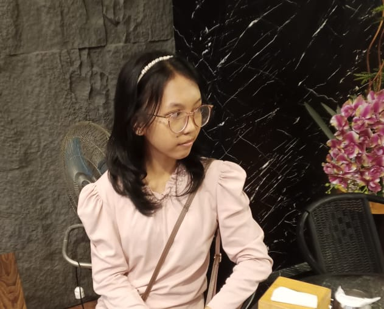

Programming & Technology
Saya tertarik mempelajari bagaimana teknologi bekerja dan bagaimana sebuah program dapat dibuat untuk menyelesaikan berbagai masalah.
A little space about me, my interests, and my journey.
WELCOME TO MY SPACE
Mahasiswa Ilmu Komputer & Penjelajah Kreativitas
Selamat datang di personal landing page saya. Di sini kamu bisa mengenal sedikit tentang saya, kemampuan saya, dan hal-hal yang saya sukai.
Saya adalah mahasiswa Ilmu Komputer yang tertarik dengan teknologi dan kreativitas.
Saya juga menikmati musik, games, serta berbagai pengalaman baru.
ABOUT ME

Halo! Saya Yesy Pelita Estela Pardede, seorang mahasiswa Ilmu Komputer yang senang mengeksplorasi teknologi, kreativitas, musik, permainan, dan pengalaman baru.
Student since:
MY SKILLS
Hal-hal yang sedang saya pelajari dan kembangkan selama perjalanan di bidang Ilmu Komputer.
Saya tertarik mempelajari bagaimana teknologi bekerja dan bagaimana sebuah program dapat dibuat untuk menyelesaikan berbagai masalah.
Saya senang menggabungkan teknologi dengan kreativitas untuk menghasilkan ide dan proyek digital yang menarik.
MY FAVORITES
Beberapa hal yang membuat waktu luang saya menjadi lebih menyenangkan.
Saya senang mendengarkan musik dan menemukan berbagai artis serta genre musik.
Musik menjadi salah satu hal yang saya nikmati ketika sedang santai atau mengerjakan sesuatu.
Saya suka menemukan lagu baru dan menikmati musik sesuai dengan suasana hati.
Saya senang bermain cozy games atau adventure games di waktu luang.
Salah satu impian saya adalah berkeliling dunia dan merasakan berbagai tempat serta budaya yang baru.
Saya ingin suatu hari bisa mengunjungi tempat-tempat baru dan mendapatkan pengalaman yang berbeda.
GET IN TOUCH
Jangan ragu untuk menghubungi saya melalui informasi kontak berikut.
Jika ingin menghubungi saya untuk keperluan project, pembelajaran, atau hal lainnya, silakan gunakan salah satu kontak di atas.